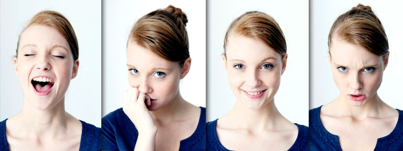

| Página Inicial | Publicações | Clinicas Psiquiatricas | Login/Registro |
|---|
Depressão |
|
Ansiedade |
|
Solidão |
|
Transtorno Bipolar |
|
Transtorno de Personalidade |
|
| Contatos |
| Telefone: (61)4002-8922 |
| E-mail: webmentalhealth@saude.ucb.br |